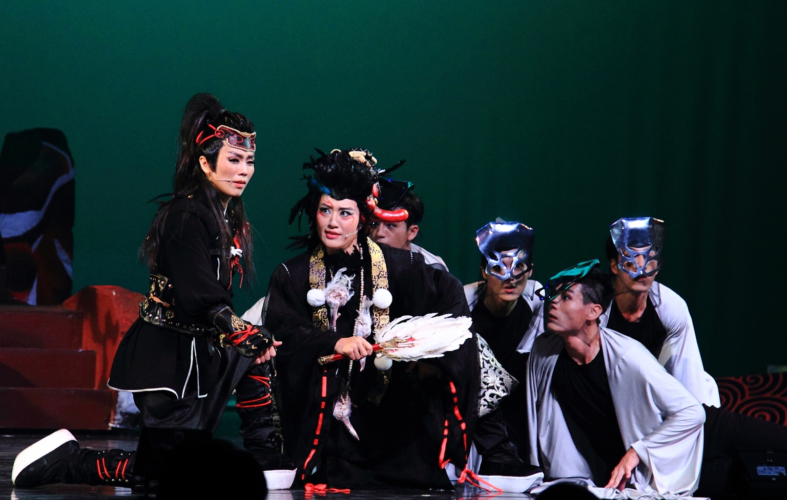
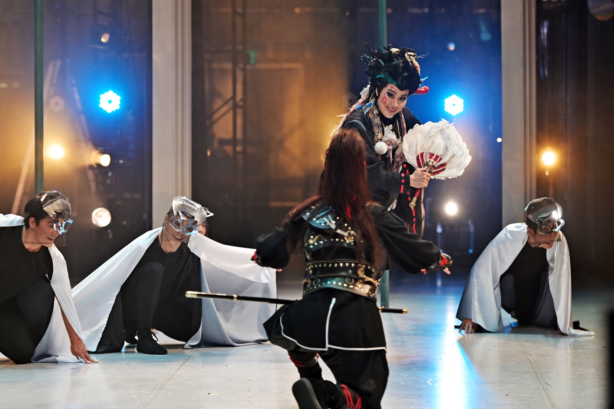
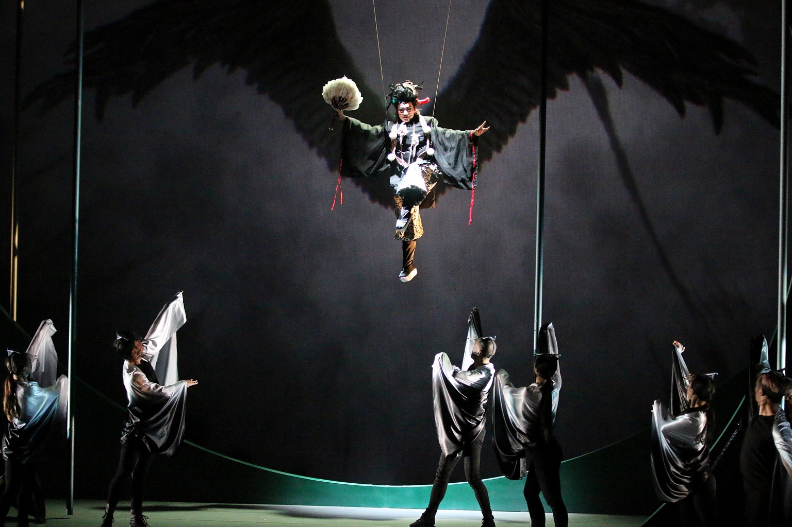

WORK · 2016 / 2019
《鞍馬天狗》
編劇・導演

奇巧歌仔武俠劇場
顛覆傳統、臺日混搭、華麗歌舞、泱泱俠義
天狗神蹟，翩然降世！
擅長玩轉各種劇場元素的奇巧劇團，迎接混搭新挑戰，碰撞出傳統戲曲與現代戲劇的精彩火花！融合歌仔戲、豫劇、搖滾樂、日本寶塚歌舞及殺陣劍術，再注入激盪人心的武俠精神，推出經典劇目《鞍馬天狗》。靈感源自日本作家大佛次郎同名原著小說，以魔幻寫實手法重新演繹。
PROGRAM
節目介紹
擅長搓融傳統戲曲與現代戲劇的奇巧劇團，這回挑戰歌仔戲、武俠、搖滾樂、豫劇、寶塚風格融合，推出經典劇目《鞍馬天狗》。該劇靈感源自日本大佛次郎原著小說，一位半神半妖的天狗大神，一名存在傳說中的俠士「鞍馬天狗」，一群挺身對抗暴政的革命志士，一段虛實交錯的敘事……
由劉建幗編導，全明星卡司-豫劇王子劉建華、歌仔戲魅力小生李佩穎、劇場才子韋以丞、明華園天字團主力菁英孫詩雯、明華園總團優質小生李郁真主演。
2016年由衛武營委託製作，首演後好評如潮、加演聲浪不斷，2019年將重製演出的奇巧歌仔武俠劇場《鞍馬天狗》，向胡撇仔戲與歌仔戲歷史致敬，在音樂上延續胡撇仔的中/日/西混融風，呈現歌仔戲、豫劇、搖滾樂等豐富多元的聽覺饗宴之外，更將寶塚歌舞、殺陣劍術，揉雜成一齣華麗多元的魔幻寫實戲劇，將胡撇仔美學精神發揮極致，打造當代藝術精品。
CREATIVE TEAM
製作團隊
CAST
領銜主演
PRODUCTION PHOTOS
演出劇照



CRITICAL RESPONSE
評論節錄
奇巧的作品早已擺脫「通俗」與「藝術」間如何取得平衡的問題，而能在兩者的高空鋼繩上自在地跳出華麗之舞了
臺北藝術大學 徐亞湘教授評《鞍馬天狗》在傳奇與現實間從容出入的藝術視野，奇巧已直逼莎劇的高度
詩人導演 鴻鴻評《鞍馬天狗》原來這就是台灣的寶萊塢，或者說這就是我們台灣當代音樂劇該有的面貌，不忌諱外來影響（比如寶塚），語言與歌曲也真實面對當下這瑰土地的多元樣貌
衛武營國家藝術文化中心戲劇顧問 耿一偉 評《鞍馬天狗》